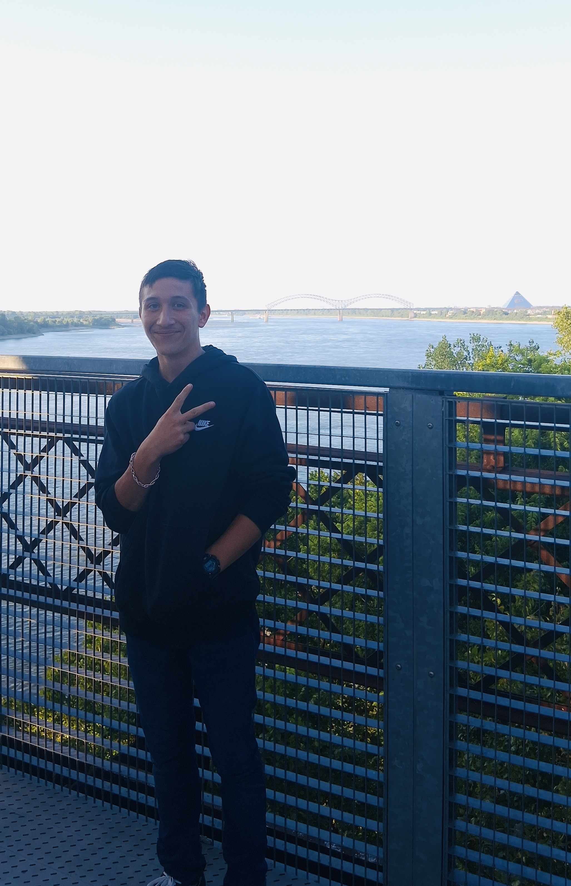

PERSONNEL PROFILE
REF: AJC-2026I am a creative developer and designer specialized in **Website Architecture**, **Industrial UI Design**, and **Professional Photography**. My work merges technical engineering with high-end visual storytelling.
Whether I am writing clean, responsive code or capturing the sharp details of a subject through a lens, I focus on the intersection of art and utility. I strive to build digital environments that are as functional as they are visually striking, using the Crimson & Teal framework to define my signature.
SYSTEM CAPABILITIES
WEB DESIGN & DEV
95%
PHOTOGRAPHY
92%
UI/UX ARCHITECTURE
88%
BRANDING
85%